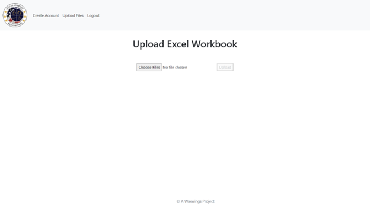

Full Stack Application

MASS Clinic: a nonprofit organization that provides free, volunteer-based care for non-emergency cases of acute or chronic diseases in Duval County (Jacksonville, Florida).
MASS Clinic was part of a University of North Florida (UNF) program that has student development teams produce a product for those various nonprofit local organizations. The development teams work with their local organization for two semesters to complete an entire software development process. MASS Clinic was entrusted to our student development team which included three other student developers and myself.
MASS Clinic relies on donors and philanthropy to sustain their medical work. Donors and possible donors need to view the patients’ quality data so that they can make better decisions on their donorship. This data was previously organized on the MASS Clinic website in data tables with just labels and numbers which made it unclear and difficult for users to fully understand.
A successful solution would be to create a dashboard system that displays and organizes dynamic data on patient outcomes into more visually engaging graphs from an uploaded excel file that initally had all the patient data.
For the solution, the development team created two web applications: an Administrator File Applicaiton and a Patient Quality Dashboard Application. The entire project was built this way to keep the separation of concerns of an admin user and donor user distinct.
The Administrator File Application was created with a landing sign in page that prompts a user id and password as seen in the image below; this feature has authentication and authorization capabilities.
The following page after a successful sign in, is a file upload page which also checks if the file is in the proper format as seen in the image below. If successfully uploaded, a submission successful screen will show. This application also has the capability of adding another admin user.
